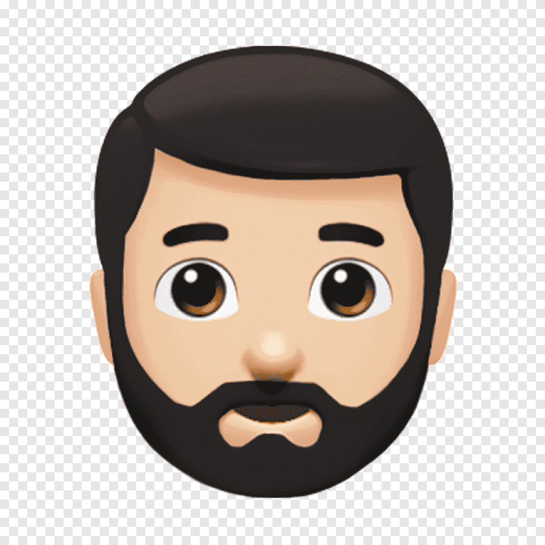

Acko Rafajlovski

Summary
I am hardworking and loyal person who is really dedicated
in the thing that I work on. My ambition is to become a great profesional Web Developer
General Information
- Date of Bird: 05.02.1992
- Height: 190 cm
- Weight: 88 kg.
- Living Place: Tetovo, Macedonia
Education
This are all the schools I went to:
- Primary school: OU "Lirija".
- Highschool: Gymnasium "Kiril Pejcinovic Tetoec".
- University: "American College" Skopje.
Work Experience
Places where I worked:
- JZU Klinicka bolnica Tetovo: 2014 - present day
Skills
This are some rellevant skills:
- IT technition: ⭐️⭐️⭐️⭐️⭐️
- Hardware reparation:⭐️⭐️⭐️⭐️
- Microsoft Office Expert:⭐️⭐️⭐️⭐️⭐️
- Network Management:⭐️⭐️⭐️
Awards and Achievments
- Bachelor degree in Computer Science and Technology
- Certificate for Windows Operative System
- Certificate for Microsoft Office package
Other Things